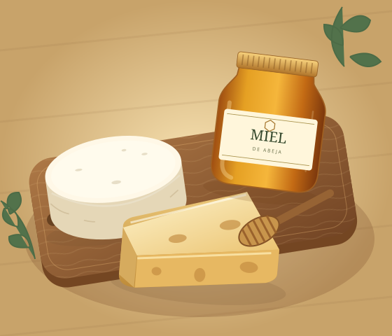

Queso fresco
Textura suave y sabor delicado. Perfecto para acompañar panes, ensaladas y desayunos.
S/ 18.00
Quesos y miel de abeja seleccionados para acompañar tus desayunos, reuniones y pequeños antojos.

Dos especialidades que se complementan a la perfección.

Textura suave y sabor delicado. Perfecto para acompañar panes, ensaladas y desayunos.


Orgánicos del Norte nace como una propuesta para acercar el queso y la miel de abeja a quienes disfrutan de los sabores de nuestra región.
Una demostración del recorrido de compra, sin pagos reales.
Explora quesos y miel, revisa sus presentaciones y encuentra el tamaño ideal.
Agrega productos y ajusta cantidades. Tu selección se guarda en este navegador.
Completa el formulario de ejemplo y revisa la pantalla de confirmación.
Comentarios ilustrativos para esta demostración.
“El queso fresco con pan y café: así empieza un buen día.”
“La miel es perfecta para el desayuno de los chicos.”
“Me gusta la idea de una despensa con sabores de acá.”
Déjanos tu correo y te contaremos sobre nuevas presentaciones. Demo: no envía ni guarda datos.